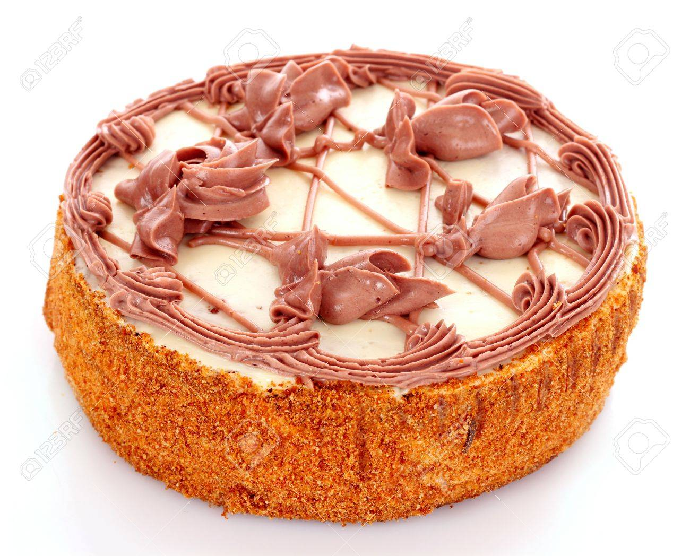

If I were to describe myself, I would say I am one insecure young woman. I thrive in fear, I have anxiety issue, I feel I am never enough. I know my fears yet I do nothing to overcome them. If I were to die from a self-inflicted death, I am certain it will be an anxiety related death.
My childhood was really much uneventful, I do not remember in details of what my life had been like prior to 10years of age, it feels like that was when I was just born
Growing up I never did really had a father-daughter relationship and that was because my father stays in a different town, he only comes to town once a while and on holidays we’d go visiting. I always looked forward to him coming home because that’s the only family time we have. Some years later, my father started to live with us due to a sickness and he needs proper medical care which was only accessible in the city I was in, it was then I started to have a personal relationship with him; he literally became my best friend. He was a convalescent at that time who needs cares, I’d care and cook for him, he was a picky eater lol. I love to listen to him relieve memories of his feat, his spiritual and life journey. I could talk to him for hours and not get bored .I was in awe, I mean how can someone be so great?
| Vanilla | Redvelvet | Chocolate |
| Butter | Oil | Oil |
| Baking Powder | Baking Soda | Bicarbonate of Soda |